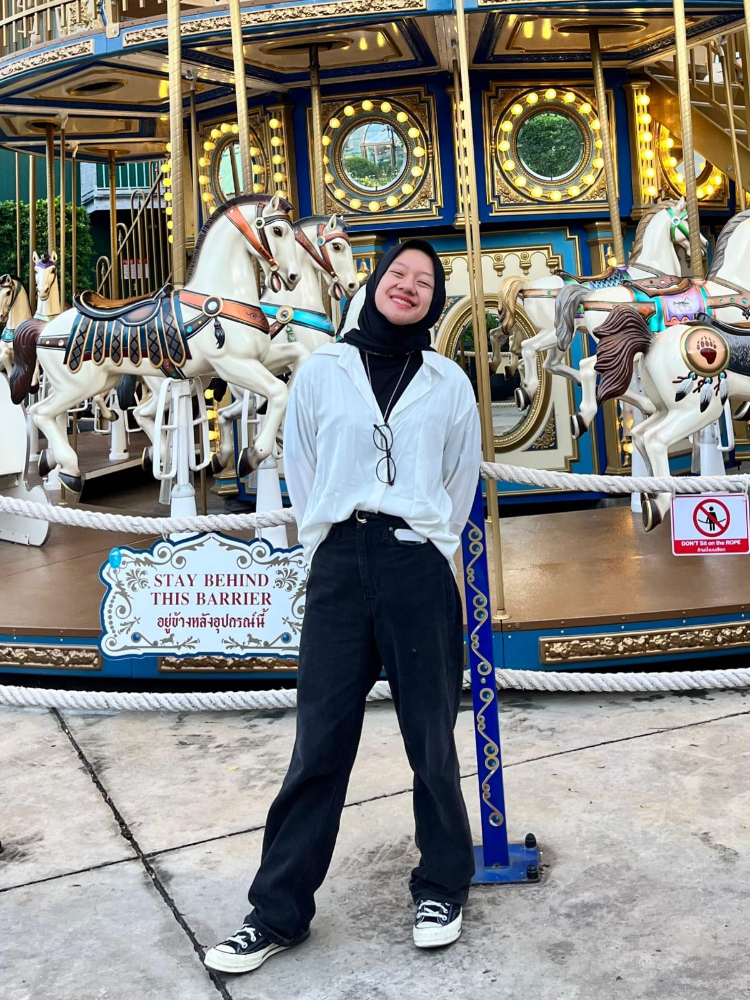

Saya adalah mahasiswi Politeknik Negeri Pontianak, Program Studi Teknik Informatika. Saya memiliki ketertarikan pada teknologi dan desain, serta berupaya menciptakan solusi digital yang tidak hanya berfungsi baik, tetapi juga memberikan pengalaman yang menyenangkan bagi pengguna.
Saya berfokus untuk terus mengembangkan keterampilan di bidang front-end development, UI/UX design, dan teknologi web modern. Setiap proyek saya anggap sebagai peluang untuk menghadirkan solusi yang inovatif, fungsional, dan berorientasi pada pengguna.